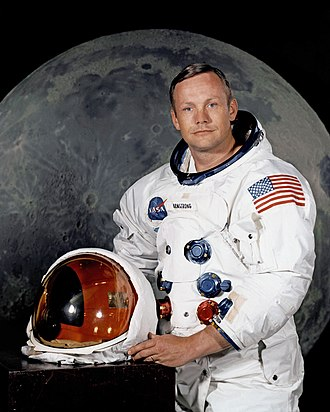

.png) Astronauts
Astronauts
Neil Armstrong's historic first words when he stepped onto the Moon on July 20, 1969, were: "That's one small step for [a] man, one giant leap for mankind."
| Serial No | Name | Mission Name | Date of Going | Date of Coming Back | Bio (Wikipedia) |
|---|---|---|---|---|---|
| 1 | Neil Armstrong | Apollo 11 | July 16, 1969 | July 24, 1969 | Link |
| 2 | Buzz Aldrin | Apollo 11 | July 16, 1969 | July 24, 1969 | Link |
| 3 | Michael Collins | Apollo 11 | July 16, 1969 | July 24, 1969 | Link |
| 4 | Alan Bean | Apollo 12 | November 14, 1969 | November 24, 1969 | Link |
| 5 | Pete Conrad | Apollo 12 | November 14, 1969 | November 24, 1969 | Link |
| 6 | Alan Shepard | Apollo 14 | January 31, 1971 | February 9, 1971 | Link |
| 7 | Edgar Mitchell | Apollo 14 | January 31, 1971 | February 9, 1971 | Link |
| 8 | David Scott | Apollo 15 | July 26, 1971 | August 7, 1971 | Link |
| 9 | James Irwin | Apollo 15 | July 26, 1971 | August 7, 1971 | Link |
| 10 | John Young | Apollo 16 | April 16, 1972 | April 27, 1972 | Link |
| 11 | Charles Duke | Apollo 16 | April 16, 1972 | April 27, 1972 | Link |
| 12 | Eugene Cernan | Apollo 17 | December 7, 1972 | December 19, 1972 | Link |



| Serial No | Name | Mission Name | Date of Going | Date of Coming Back | Bio (Wikipedia) |
|---|---|---|---|---|---|
| 1 | Yuri Gagarin | Vostok 1 | April 12, 1961 | April 12, 1961 | Link |
| 2 | Valentina Tereshkova | Vostok 6 | June 16, 1963 | June 19, 1963 | Link |
| 3 | John Young | Gemini 3, Apollo 10, Apollo 16 | March 23, 1965 | April 27, 1972 | Link |
| 4 | Alan Shepard | Mercury-Redstone 3, Apollo 14 | May 5, 1961 | February 9, 1971 | Link |
| 5 | Gus Grissom | Liberty Bell 7, Gemini 3, Apollo 1 | July 21, 1961 | January 27, 1967 | Link |
| 6 | Scott Carpenter | Mercury-Atlas 7 | May 24, 1962 | May 24, 1962 | Link |
| 7 | Wally Schirra | Mercury-Atlas 8, Gemini 6A, Apollo 7 | October 3, 1962 | October 22, 1968 | Link |
| 8 | Gordon Cooper | Mercury-Atlas 9, Gemini 5 | May 15, 1963 | May 16, 1963 | Link |
| 9 | Pete Conrad | Gemini 5, Gemini 11, Apollo 12 | August 21, 1965 | November 24, 1969 | Link |
| 10 | Frank Borman | Gemini 7, Apollo 8 | December 4, 1965 | December 27, 1968 | Link |
| 11 | Jim Lovell | Gemini 7, Gemini 12, Apollo 8, Apollo 13 | December 4, 1965 | April 17, 1970 | Link |
| 12 | Bill Anders | Gemini 11, Apollo 8 | November 11, 1966 | December 27, 1968 | Link |
| 13 | Frank Borman | Gemini 7, Apollo 8 | December 4, 1965 | December 27, 1968 | Link |
| 14 | Jim Lovell | Gemini 7, Gemini 12, Apollo 8, Apollo 13 | December 4, 1965 | April 17, 1970 | Link |
| 15 | Bill Anders | Gemini 11, Apollo 8 | November 11, 1966 | December 27, 1968 | Link |
| 16 | Tom Stafford | Gemini 6A, Gemini 9A, Apollo 10 | December 15, 1965 | May 26, 1969 | Link |
| 17 | Gene Cernan | Gemini 9A, Apollo 10, Apollo 17 | June 3, 1966 | December 19, 1972 | Link |
| 18 | John Young | Gemini 3, Gemini 10, Apollo 10, Apollo 16 | March 23, 1965 | April 27, 1972 | Link |
| 19 | Alan Bean | Apollo 12, Skylab 3 | November 14, 1969 | November 24, 1969 | Link |
| 20 | Charles "Pete" Conrad | Gemini 5, Gemini 11, Apollo 12, Skylab 2 | August 21, 1965 | February 8, 1974 | Link |
| 21 | Richard Gordon | Gemini 11, Apollo 12 | November 11, 1966 | November 24, 1966 | Link |
| 22 | Jack Swigert | Apollo 13 | April 11, 1970 | April 17, 1970 | Link |
| 23 | Jim Irwin | Apollo 15 | July 26, 1971 | August 7, 1971 | Link |
| 24 | David Scott | Gemini 8, Apollo 9, Apollo 15 | March 16, 1966 | August 7, 1971 | Link |
| 25 | Alfred Worden | Apollo 15 | July 26, 1971 | August 7, 1971 | Link |
| 26 | Edgar Mitchell | Apollo 14 | January 31, 1971 | February 9, 1971 | Link |